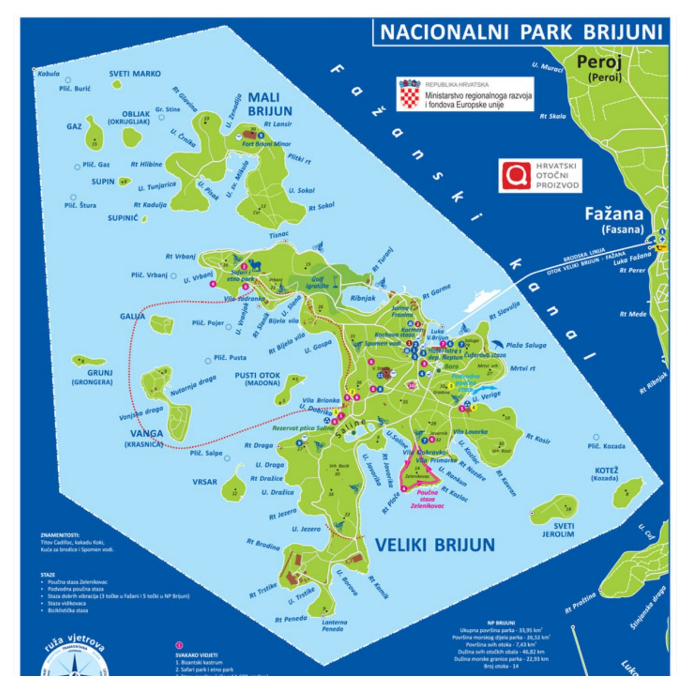
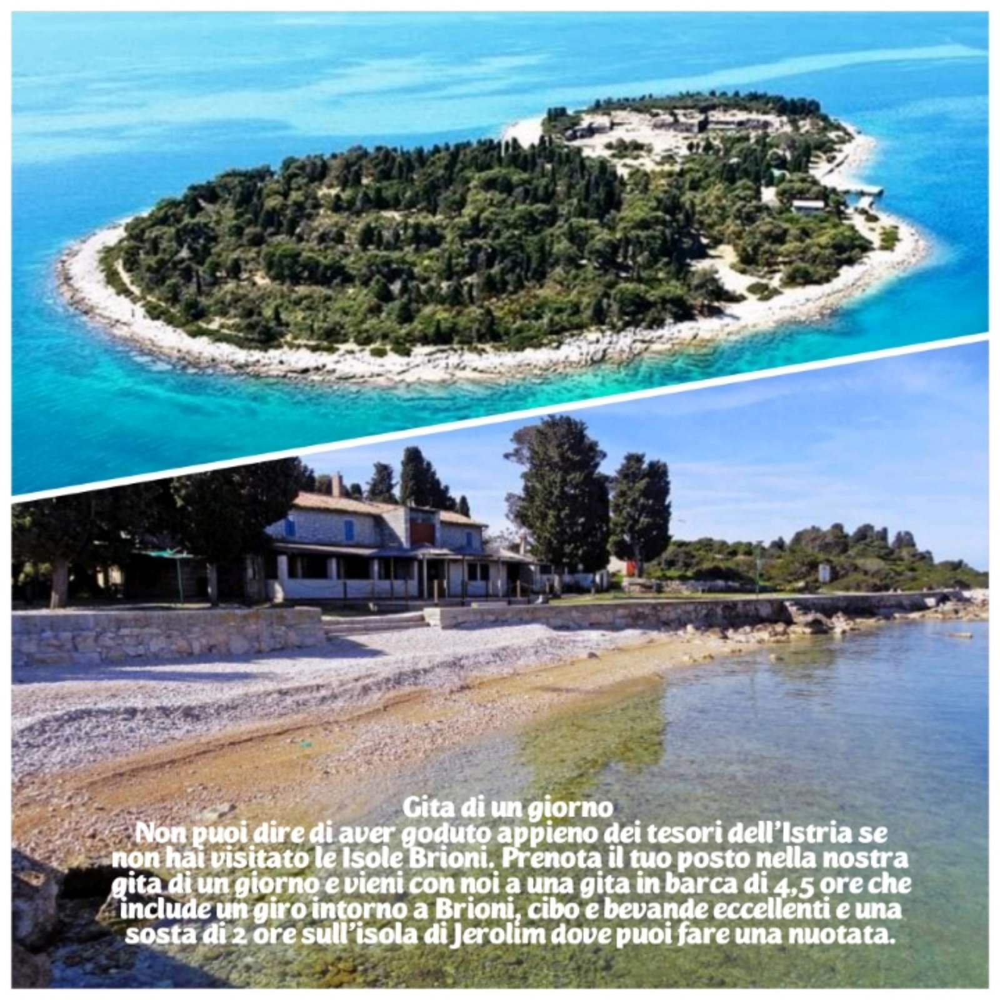
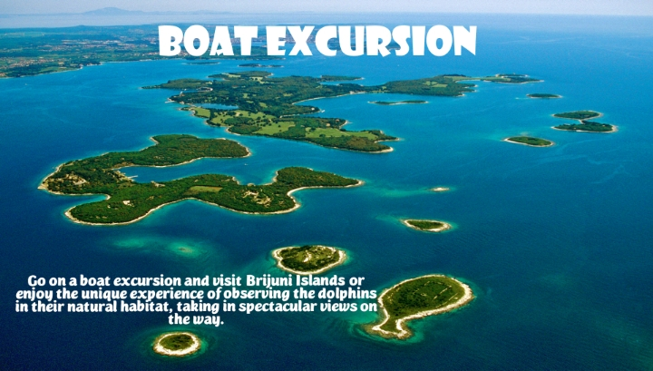
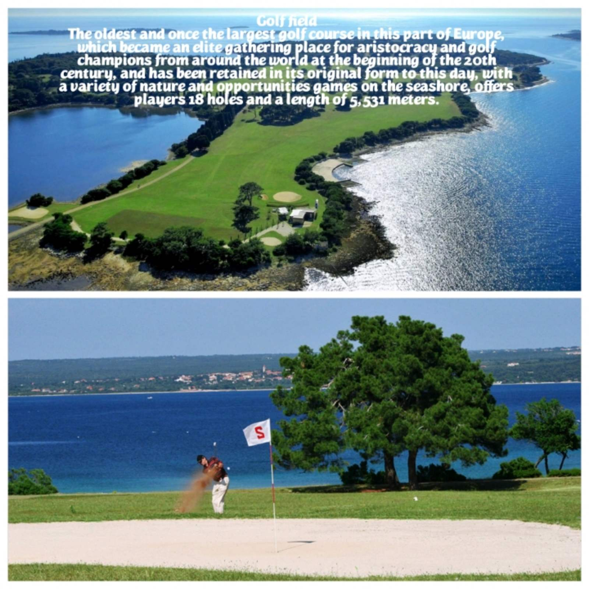
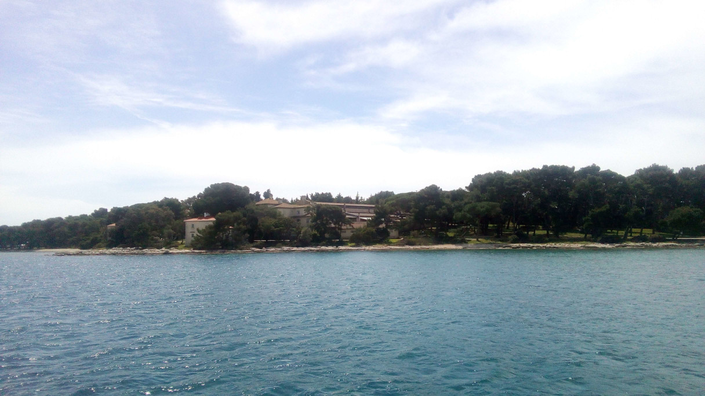

Escursione in barca alle Isole Brioni
Un parco nazionale visto dall’acqua, a breve distanza in barca da Pola.

- Isole
- 14 isole e isolotti
- Mare in estate
- 22–25 °C
- Tour diurno
- 12:00–16:30
- Tour al tramonto
- 18:00–21:00
Un arcipelago davanti alla costa
L’arcipelago di Brioni si trova poco al largo della costa, vicino a Pola e a Fasana. Conta 14 isole e isolotti: Brioni Maggiore (Veliki Brijun), Brioni Minore (Mali Brijun), Vanga, San Girolamo (Sveti Jerolim), San Marco (Sveti Marko), Kozada, Pusti Otok, Gaz, Galija, Obljak, Grunj, Supin, Supinić e Vrsar.
Il mare tra le isole è calmo e limpido e la costa passa da boschi verdi a punte rocciose e baie nascoste. È questa varietà a rendere così bello un giro lento in barca.

Un po’ di storia
Le Brioni sono abitate da migliaia di anni e sulla riva si vedono ancora resti romani. Nel Novecento le isole divennero la residenza estiva di Josip Broz Tito, presidente della Jugoslavia, che vi accolse capi di Stato e star del cinema. Oggi sono un parco nazionale aperto ai visitatori.

Clima e bagni
Le isole hanno un clima mediterraneo mite. In estate la temperatura del mare è in genere compresa tra 22 e 25 °C, abbastanza calda per un lungo bagno a San Girolamo.
Le vostre opzioni da Pola
Scoprite i due tour nel dettaglio →
- Tour diurno, 12:00–16:30: giro intorno alle Brioni e due ore di bagno a San Girolamo, 50 € per adulto.
- Tour al tramonto, 18:00–21:00: giro serale con la possibilità di vedere i delfini, 50 € per adulto.
- In entrambi i tour sono inclusi un pasto e bevande a volontà e i bambini sotto i 3 anni viaggiano gratis.
- Tour diurno: 12:00–16:30
- Tour al tramonto: 18:00–21:00
- Pasto e bevande a volontà
- Bambini sotto i 3 anni: gratis
Foto


Da sapere prima di partire
Il biglietto del parco
Nel tour diurno si paga un piccolo biglietto d’ingresso a San Girolamo. Nel tour al tramonto non è previsto.
Portate l’attrezzatura da snorkeling
L’acqua è limpida e calma intorno alla sosta per il bagno.
Scegliete in base all’umore
Il giorno per il bagno e le rive verdi, la sera per la luce dorata e i delfini.
Pronti a prenotare?
Inviateci le date e il numero di persone. Verifichiamo la disponibilità e rispondiamo entro 24 ore.